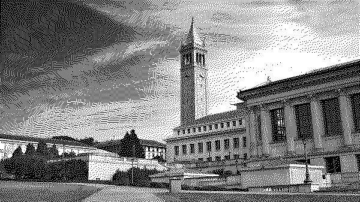

William Echols

University of California, Berkeley (ordered bayer dither)
About
Studying Mathematics at the University of California, Berkeley.
I am interested in math, cs, and linux.
Experience
- Aug 2023 — May 2024 TAMU Fractals Research Team Researched Sierpiński gasket using C++
- Jan 2023 TAMUHack 2023 Won 3rd place in Goldman Sachs Challenge for sentiment analysis platform
- Oct 2022 Datathon 2022 Won Best Use of Microsoft Cloud for live-streaming NLP web app
- Apr 2021 — Sep 2021 Natural Logarithm of 2 Calculated ln2 to 1.5 x 10^12 digits (previous world record)
Contact
williamechols@berkeley.edu
github.com/williamechols